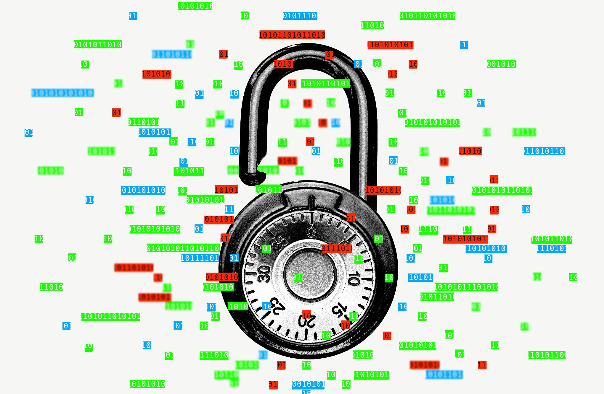

FinCEN — ведомство Казначейства США, которое защищает финансовую систему от отмывания денег и финансирования терроризма, — сообщило во вторник об «инциденте, приведшем к несанкционированному доступу к ограниченному подмножеству его систем». Полных масштабов и причин взлома не раскрывают, а часть сервисов ведомство намеренно вывело из сети «как превентивную меру», о чём говорится в официальном уведомлении от 24 ноября. По данным Reuters, подтверждением об этом агентству назвал источник в ведомствах: системы отключили сами, а не противник.
В том же уведомлении FinCEN объявил «временное ограниченное исключение» для участников рынка, которые из-за сбоя не могут вовремя подать отчёты по Bank Secrecy Act и корпоративному реестру (CTA). Онлайн-подача отчётов о подозрительных операциях продолжается, хотя отдельные сервисы могут быть недоступны; тем, кому нужна срочность, предлагают горячую линию для финансовых институтов — она, по заверению ведомства, не пострадала.
Признание FinCEN прозвучало через считаные часы после того, как New York Times рассказала о проникновении в систему разведки по открытым источникам, которую используют ЦРУ и Офис директора нацразведки (тот сюжет с ИИ-инструментом Artex мы уже разбирали). Затронуты оказались и структуры Пентагона. Является ли инцидент в FinCEN частью той же кампании — официально не сообщается; ни злоумышленника, ни состав утекших данных ведомство не назвало.
FinCEN хранит сводную финансовую «правду» американской экономики: отчёты банков о подозрительных транзакциях и данные бенефициарных владельцев компаний. Утечка такого архива ударила бы по всей цепочке правоохраны, завязанной на эти сведения. Пока ведомство говорит лишь об «ограниченном подмножестве систем» — но сам факт, что финансовый надзор держит часть инфраструктуры в отключке, а регулятору приходится официально освобождать банки от сроков отчётности, говорит о серьёзности сбоя.